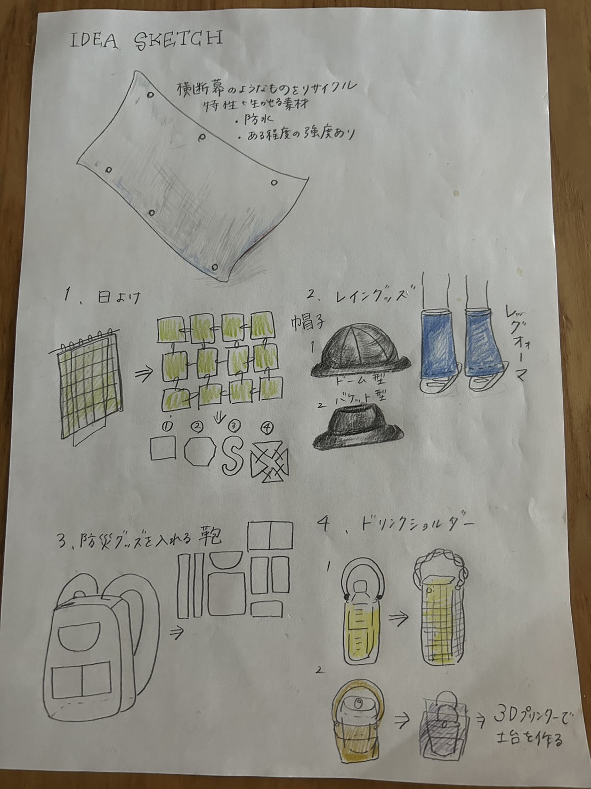

第2回｜グループプロジェクト＆個人プロジェクトイメージづくり
①後期プロジェクト イメージづくり
横断幕を使用したものづくり
素材研究（横断幕の特徴）
＊ビニール横断幕は耐久性に優れている
＊硬くて強度があり、屋外使用に特化している
＊耐久年数が3～5年と言われている
→鞄やカバー？レジャーシートなど（持ち運べるもの）
できれば既存のものではないものがよい
日よけやレイングッズ、防災グッズを入れる鞄、ドリンクショルダーの案が挙げられる

1.日よけ 2.レイングッズ 3.防災グッズを入れる鞄 4.ドリンクショルダー
4のドリンクショルダーに決定⭐
使用する機材：
素材：横断幕、ストロー、チェーン、接続部品
これからの日程
10月6日 第 3回｜グループプロジェクト アイディアスケッチ＆個人プロジェクト プロトタイプ製作①
10月13日 第 4回｜グループプロジェクト アイディアスケッチ＆個人プロジェクト プロトタイプ製作② 韓国DAY企画下調べ
10月20日 第 5回｜
10月27日 第 6回｜
11月 3日 第 7回｜
11月10日 第 8回｜
11月17日 第 9回｜
11月24日 第10回｜
11月17日 第11回｜
11月17日 第12回｜
11月17日 第13回｜
12月 1日 第14回｜
12月 8日 第15回｜
12月15日 第16回｜
12月22日 第17回｜
12月 1日 第14回｜
12月 1日 第14回｜
①後期プロジェクト アイディアスケッチ
②個人プロジェクト アイディアスケッチ